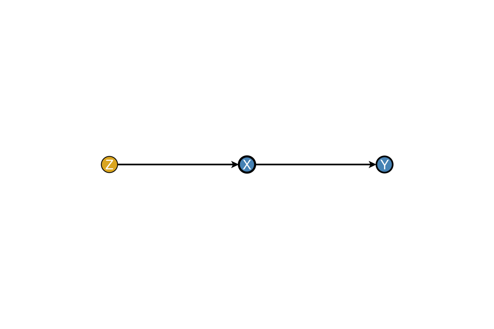
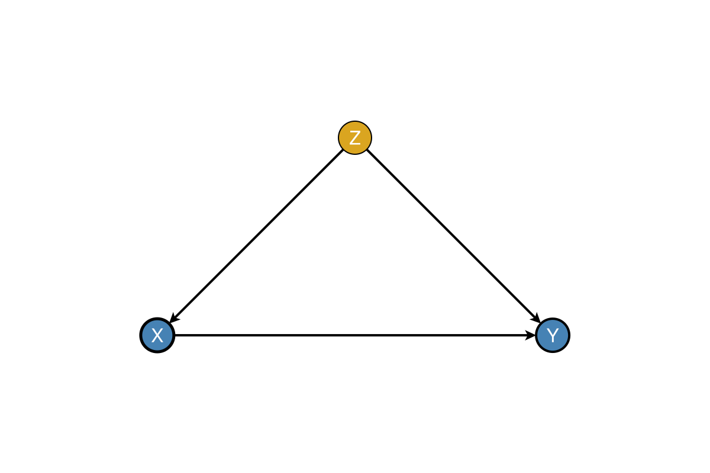
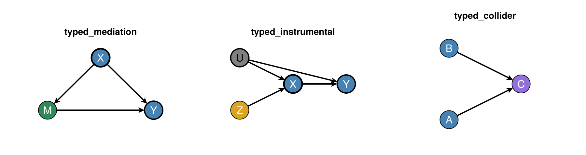
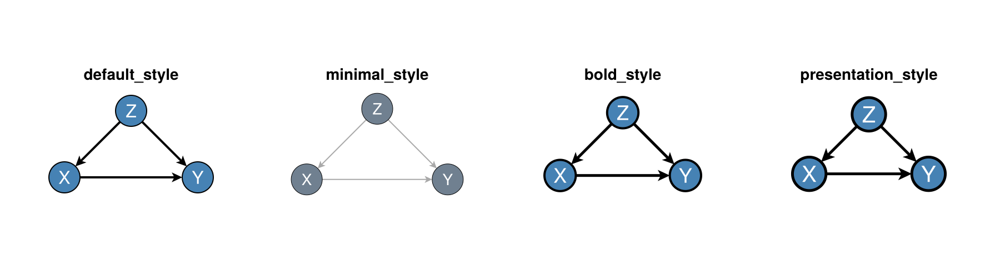

Node Types & Styling
DAGMakie provides semantic node types for causal diagrams, with automatic styling.
Node Types
The NodeType enum defines common roles in causal diagrams:
@enum NodeType begin
Observed # Standard observed variable
Latent # Unobserved/latent variable
Treatment # Treatment/exposure (thick stroke)
Outcome # Outcome (emphasised outline)
Instrument # Instrumental variable
Confounder # Confounding variable
Mediator # Mediating variable
Collider # Collider variable
EffectMeasure # IDAG causal-effect node
SwigFixed # Fixed half of a SWIG split
endFor interaction / DiD conventions (IDAGs, modifier edges, SWIGs — defined there), see Visual Grammar.
Using DAGSpec
The DAGSpec type combines a graph with node specifications:
using Graphs, DAGMakie, CairoMakie
g = SimpleDiGraph(3)
add_edge!(g, 1, 2) # Z → X
add_edge!(g, 1, 3) # Z → Y
add_edge!(g, 2, 3) # X → Y
spec = DAGSpec(g,
node_labels = ["Z", "X", "Y"],
node_types = [Confounder, Treatment, Outcome]
)
# Auto triangle layout: confounder Z at the apex
fig, ax, p = dagplot(spec)
fig
Node Type Styling
Each node type has default styling (in-node white labels on dark fills, except Latent / SwigFixed):
| Type | Default Colour | Marker / stroke | Use Case |
|---|---|---|---|
Observed | Steel blue | circle | Standard observed variables |
Latent | Gray (hollow) | circle, stroke 2 | Unobserved variables |
Treatment | Steel blue | circle, stroke 2.5 | Exposure / intervention |
Outcome | Steel blue | circle, stroke 2.0 darkgray | Response variables |
Instrument | Goldenrod | diamond | Instrumental variables |
Confounder | Goldenrod | circle | Confounding variables |
Mediator | Seagreen | circle | Mediating variables |
Collider | Medium purple | circle | Collider variables |
EffectMeasure | Seagreen | rect | IDAG effect-measure node |
SwigFixed | White | rect, stroke 2 | SWIG fixed half $a$ |
Custom Styling Functions
Override default styling:
# Get default colour for a type
color = default_node_color(Treatment) # :steelblue
# Get default marker
marker = default_node_marker(EffectMeasure) # :rect
# Get default stroke width
stroke = default_node_strokewidth(Treatment) # 2.5Apply Node Type Styling
Apply styling to existing graphs:
g = SimpleDiGraph(3)
add_edge!(g, 1, 2)
add_edge!(g, 2, 3)
types = [Confounder, Treatment, Outcome]
colors, markers, strokewidths = apply_node_type_styling(types)
fig, ax, p = dagplot(g,
labels = ["Z", "X", "Y"],
node_color = colors,
node_marker = markers,
node_strokewidth = strokewidths,
)
fig
Pre-typed Graph Constructors
Create graphs with pre-assigned node types:
spec = typed_confounding_graph()
fig, ax, p = dagplot(spec)
fig
fig = Figure(size = (900, 240))
ax1 = Axis(fig[1, 1], title = "typed_mediation")
ax2 = Axis(fig[1, 2], title = "typed_instrumental")
ax3 = Axis(fig[1, 3], title = "typed_collider")
dagplot!(ax1, typed_mediation_graph())
dagplot!(ax2, typed_instrumental_graph())
dagplot!(ax3, typed_collider_graph())
fig
Style Presets
DAGMakie provides style presets for different contexts:
g, labels = confounding_graph(["Z", "X", "Y"])
fig = Figure(size = (900, 240))
ax1 = Axis(fig[1, 1], title = "default_style")
ax2 = Axis(fig[1, 2], title = "minimal_style")
ax3 = Axis(fig[1, 3], title = "bold_style")
ax4 = Axis(fig[1, 4], title = "presentation_style")
dagplot!(ax1, g; labels = labels, style = default_style())
dagplot!(ax2, g; labels = labels, style = minimal_style())
dagplot!(ax3, g; labels = labels, style = bold_style())
dagplot!(ax4, g; labels = labels, style = presentation_style())
fig